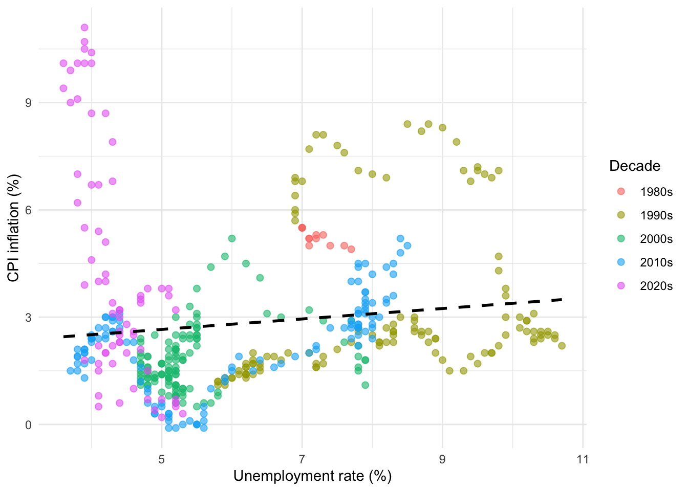
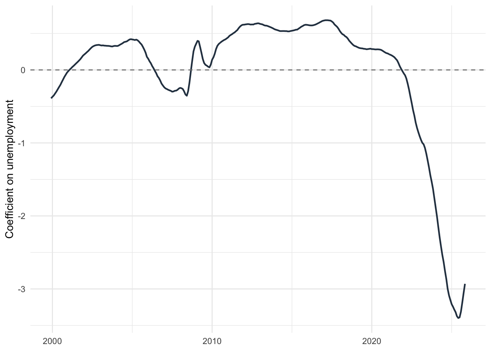

The Phillips curve — the relationship between unemployment and inflation — is one of the most debated relationships in macroeconomics. It has been declared dead, resurrected, and declared dead again more times than any other empirical regularity. This chapter estimates it with real UK data and asks whether it still holds.
7.1 A brief history of the Phillips curve
7.1.1 The original Phillips curve
In 1958, A.W. Phillips published a paper in Economica documenting a striking negative relationship between wage inflation and unemployment in the United Kingdom from 1861 to 1957. When unemployment was low, wages rose quickly; when unemployment was high, wages stagnated. The mechanism was intuitive — a tight labour market gives workers bargaining power, so employers must raise wages to attract and retain staff.
Phillips plotted a scatter diagram and fitted a curve through it. He was careful to note that the relationship was non-linear: wage inflation rose sharply as unemployment fell below about 2.5%, but changed little at higher unemployment rates. The paper was empirical, not theoretical — Phillips offered no formal model, just a remarkably stable pattern across nearly a century of data.
7.1.2 Samuelson, Solow, and the policy trade-off
Two years later, Paul Samuelson and Robert Solow brought the Phillips curve to American economics and made a crucial modification. They replaced wage inflation with price inflation, arguing that firms pass wage increases through to prices. This reframing turned the Phillips curve into a policy menu: governments could choose between lower unemployment (at the cost of higher inflation) or lower inflation (at the cost of higher unemployment). The simple Phillips curve can be written as:
\[\pi_t = \alpha + \beta u_t + \varepsilon_t\]
where \(\pi_t\) is the inflation rate and \(u_t\) is the unemployment rate. The key parameter is \(\beta\), which should be negative — higher unemployment is associated with lower inflation. Through the 1960s, policymakers in the US and UK operated as though this trade-off were stable, choosing points along the curve.
7.1.3 Friedman, Phelps, and expectations
The stable trade-off collapsed in the 1970s. Milton Friedman (1968) and Edmund Phelps (1967) had independently argued that the long-run Phillips curve was vertical — there was no permanent trade-off between inflation and unemployment. Their insight was that workers and firms form expectations about inflation, and any attempt to exploit the Phillips curve would simply shift expectations upward. The expectations-augmented Phillips curve takes the form:
where \(\pi_t^e\) is expected inflation and \(u^*\) is the natural rate of unemployment (or NAIRU). When unemployment equals the natural rate, inflation equals expected inflation — there is no trade-off. The stagflation of the 1970s, when both inflation and unemployment rose simultaneously, vindicated this view. Adaptive expectations models assume \(\pi_t^e \approx \pi_{t-1}\), so the equation becomes a regression of inflation on lagged inflation and unemployment.
7.1.4 The New Keynesian Phillips curve
Modern macroeconomics formalised the Phillips curve within the New Keynesian framework. The New Keynesian Phillips Curve (NKPC) derives from micro-foundations — monopolistic competition and sticky prices — and takes the forward-looking form:
\[\pi_t = \beta E_t[\pi_{t+1}] + \kappa x_t\]
where \(E_t[\pi_{t+1}]\) is the rational expectation of next-period inflation, \(x_t\) is the output gap (or a measure of real marginal cost), and \(\kappa\) captures the sensitivity of inflation to real activity. The key difference from the Friedman-Phelps version is that expectations are forward-looking rather than backward-looking. In practice, empirical work often uses a hybrid specification that includes both forward- and backward-looking terms. We will not estimate the NKPC here — it requires instrumental variables or GMM, which is beyond our scope — but it is worth knowing where the profession stands.
7.2 Pulling the data
We need two series: a measure of inflation and a measure of unemployment. The ons package provides both. We use ons_cpi() for the Consumer Prices Index and ons_unemployment() for the ILO unemployment rate. Both are available at monthly frequency going back to the mid-1990s, though CPI in particular has a long annual history.
Now we merge inflation and unemployment on date. The unemployment series uses three-month rolling averages centred on the middle month, so there is a slight timing mismatch, but for annual relationships this is immaterial.
phillips_data<-inflation|>inner_join(unemp, by ="date")|>rename(unemployment =value)|>mutate(decade =paste0(floor(year(date)/10)*10, "s"))head(phillips_data)
A quick summary gives us the range of the data. UK CPI inflation has varied from near zero to over 11% in the post-pandemic surge, while unemployment has ranged from under 4% to over 8% in the aftermath of the financial crisis.
inflation unemployment
Min. :-0.100 Min. : 3.600
1st Qu.: 1.500 1st Qu.: 4.800
Median : 2.300 Median : 5.500
Mean : 2.835 Mean : 6.213
3rd Qu.: 3.200 3rd Qu.: 7.800
Max. :11.100 Max. :10.700
7.3 The simple Phillips curve
The simplest Phillips curve is a scatter plot of inflation against unemployment. If the relationship holds, we should see a downward-sloping cloud of points: higher unemployment associated with lower inflation.
ggplot(phillips_data, aes(x =unemployment, y =inflation, colour =decade))+geom_point(alpha =0.6, size =2)+geom_smooth(method ="lm", se =FALSE, colour ="black", linetype ="dashed")+labs( x ="Unemployment rate (%)", y ="CPI inflation (%)", colour ="Decade")+theme_minimal()
`geom_smooth()` using formula = 'y ~ x'

Figure 7.1: The simple Phillips curve for the UK, coloured by decade
The colouring by decade reveals something important: the points do not sit on a single stable curve. The relationship appears to shift across decades, exactly as the expectations-augmented theory predicts. Each decade has its own cluster, reflecting different inflation expectations regimes.
We can estimate the simple Phillips curve by ordinary least squares:
model_simple<-lm(inflation~unemployment, data =phillips_data)summary(model_simple)
Call:
lm(formula = inflation ~ unemployment, data = phillips_data)
Residuals:
Min 1Q Median 3Q Max
-2.8449 -1.2865 -0.5957 0.3970 8.6035
Coefficients:
Estimate Std. Error t value Pr(>|t|)
(Intercept) 1.92660 0.35789 5.383 1.19e-07 ***
unemployment 0.14613 0.05525 2.645 0.00846 **
---
Signif. codes: 0 '***' 0.001 '**' 0.01 '*' 0.05 '.' 0.1 ' ' 1
Residual standard error: 2.133 on 441 degrees of freedom
Multiple R-squared: 0.01562, Adjusted R-squared: 0.01339
F-statistic: 6.997 on 1 and 441 DF, p-value: 0.008457
The coefficient on unemployment tells us: for each 1 percentage point rise in the unemployment rate, CPI inflation changes by \(\hat{\beta}\) percentage points. If the Phillips curve holds, this coefficient should be negative. However, the \(R^2\) is likely to be low — the simple Phillips curve is a poor description of the data when inflation expectations are shifting. The scatter plot already hinted at this: the relationship within decades may be stronger than the relationship across them.
7.4 Expectations-augmented Phillips curve
The Friedman-Phelps critique tells us we should control for inflation expectations. In the absence of a good survey measure covering the full sample, we use lagged inflation as a proxy for adaptive expectations. The expectations-augmented Phillips curve is:
If the adaptive-expectations story is correct, the coefficient \(\gamma\) on lagged inflation should be close to 1 (past inflation feeds directly into current inflation), and the coefficient \(\beta\) on unemployment should be negative and more precisely estimated than in the simple model.
phillips_data<-phillips_data|>arrange(date)|>mutate(inflation_lag =lag(inflation, 12))model_augmented<-lm(inflation~inflation_lag+unemployment, data =phillips_data)summary(model_augmented)
Call:
lm(formula = inflation ~ inflation_lag + unemployment, data = phillips_data)
Residuals:
Min 1Q Median 3Q Max
-4.1700 -0.9227 -0.4275 0.6541 7.6006
Coefficients:
Estimate Std. Error t value Pr(>|t|)
(Intercept) 1.65068 0.30239 5.459 8.14e-08 ***
inflation_lag 0.55431 0.04182 13.256 < 2e-16 ***
unemployment -0.07219 0.04905 -1.472 0.142
---
Signif. codes: 0 '***' 0.001 '**' 0.01 '*' 0.05 '.' 0.1 ' ' 1
Residual standard error: 1.794 on 428 degrees of freedom
(12 observations deleted due to missingness)
Multiple R-squared: 0.2997, Adjusted R-squared: 0.2965
F-statistic: 91.59 on 2 and 428 DF, p-value: < 2.2e-16
Compare the \(R^2\) of the augmented model to the simple model. The improvement is typically dramatic — adding lagged inflation explains most of the variation in current inflation. This is the empirical signature of inflation persistence: once inflation rises, it tends to stay elevated because expectations adjust.
cat("Simple model R-squared:", summary(model_simple)$r.squared, "\n")
Simple model R-squared: 0.01561783
cat("Augmented model R-squared:", summary(model_augmented)$r.squared, "\n")
Augmented model R-squared: 0.2997239
The coefficient on unemployment in the augmented model captures the short-run Phillips curve — the trade-off between inflation and unemployment holding expectations constant. This is the parameter that matters for policy: it tells the central bank how much disinflationary pressure a given rise in unemployment will generate.
7.5 Has the Phillips curve flattened?
One of the most discussed developments in macroeconomics since the 1990s is the apparent flattening of the Phillips curve. Through the 2010s, unemployment fell to historically low levels in the UK (and US, and euro area), yet inflation barely budged. This led many commentators to declare the Phillips curve dead. Then the post-pandemic inflation surge — with unemployment low and inflation above 10% — seemed to steepen it again.
We can test this directly by estimating rolling regressions. The idea is simple: estimate the Phillips curve over a rolling 10-year window and track how the slope coefficient \(\beta\) evolves over time. If the curve has flattened, \(\beta\) should move towards zero.
A rolling regression involves fitting the same model to successive overlapping windows of the data. For each window, we record the estimated slope and its confidence interval, then plot these over time. This is a form of time-varying parameter analysis — a simple alternative to more sophisticated state-space models.
7.6 Rolling regressions and time-varying parameters
We use zoo::rollapply() to estimate the Phillips curve over a rolling 120-month (10-year) window. At each step, we extract the coefficient on unemployment from the expectations-augmented model.
The following objects are masked from 'package:base':
as.Date, as.Date.numeric
# Prepare the data as a zoo object sorted by datephillips_zoo<-phillips_data|>filter(!is.na(inflation_lag))|>arrange(date)# Function to extract the unemployment coefficientrolling_slope<-function(df){fit<-lm(inflation~inflation_lag+unemployment, data =df)coef(fit)["unemployment"]}# Apply over rolling 120-month windowsn<-nrow(phillips_zoo)window_size<-120if(n>=window_size){slopes<-sapply(1:(n-window_size+1), function(i){window_data<-phillips_zoo[i:(i+window_size-1), ]rolling_slope(window_data)})slope_df<-tibble( date =phillips_zoo$date[(window_size):n], slope =slopes)}
Now we plot the evolution of the Phillips curve slope over time:
ggplot(slope_df, aes(x =date, y =slope))+geom_line(colour ="#2c3e50", linewidth =0.8)+geom_hline(yintercept =0, linetype ="dashed", colour ="grey50")+labs( x =NULL, y ="Coefficient on unemployment")+theme_minimal()

Figure 7.2: Rolling 10-year Phillips curve slope for the UK
The chart tells a story in three acts. During the early part of the sample, the slope is meaningfully negative — a 1 percentage point rise in unemployment is associated with a substantial fall in inflation. Through the 2000s and 2010s, the slope drifts towards zero: the Great Moderation and inflation targeting anchored expectations so firmly that unemployment had little impact on inflation. This is the “flattening” that exercised so many economists.
The post-2020 period is particularly interesting. As the pandemic and energy crisis pushed inflation to levels not seen since the early 1990s, the slope appears to steepen again. Whether this represents a genuine structural shift or a temporary shock remains an open question — and one that central banks are watching closely.
An alternative implementation uses the slider package, which integrates well with the tidyverse:
library(slider)phillips_rolling<-phillips_data|>filter(!is.na(inflation_lag))|>arrange(date)|>mutate( slope =slide_dbl(row_number(),~{idx<-.xwindow<-phillips_data|>filter(!is.na(inflation_lag))|>arrange(date)|>slice(min(idx):max(idx))if(nrow(window)<30)return(NA_real_)coef(lm(inflation~inflation_lag+unemployment, data =window))["unemployment"]}, .before =119, .complete =TRUE))
The flattening of the Phillips curve has profound implications for monetary policy. If the relationship between unemployment and inflation is weak, then the central bank must engineer very large swings in unemployment to achieve small changes in inflation — a painful trade-off. Conversely, a steep Phillips curve means that policy has more traction, but also that overheating the economy carries greater inflationary risk. The rolling regression approach lets us track these shifts in real time, rather than assuming a fixed relationship.
7.7 Exercises
Estimate a Phillips curve for the euro area using readecb::ecb_hicp() and readecb::ecb_unemployment(). Is the slope statistically significant? How does it compare to the UK estimate?
Re-estimate the rolling 10-year Phillips curve using a 5-year window instead. Does the shorter window reveal more variation in the slope, or just more noise?
Add a measure of import price inflation (you can construct this from ons_trade() or use energy prices) to the expectations-augmented Phillips curve. Does supply-side inflation improve the fit?
Estimate separate Phillips curves for the pre-2008 and post-2008 periods using a Chow test or simply running two regressions. Is there a statistically significant structural break?
Replace lagged inflation with a forward-looking proxy (e.g. the 5-year breakeven inflation rate from boe_yield_curve()) as a measure of inflation expectations. Does the fit improve?
Source Code
---execute: eval: true---# Inflation and the Phillips Curve {#sec-phillips-curve}The Phillips curve — the relationship between unemployment and inflation — is one of the most debated relationships in macroeconomics. It has been declared dead, resurrected, and declared dead again more times than any other empirical regularity. This chapter estimates it with real UK data and asks whether it still holds.## A brief history of the Phillips curve### The original Phillips curveIn 1958, A.W. Phillips published a paper in *Economica* documenting a striking negative relationship between wage inflation and unemployment in the United Kingdom from 1861 to 1957. When unemployment was low, wages rose quickly; when unemployment was high, wages stagnated. The mechanism was intuitive — a tight labour market gives workers bargaining power, so employers must raise wages to attract and retain staff.Phillips plotted a scatter diagram and fitted a curve through it. He was careful to note that the relationship was non-linear: wage inflation rose sharply as unemployment fell below about 2.5%, but changed little at higher unemployment rates. The paper was empirical, not theoretical — Phillips offered no formal model, just a remarkably stable pattern across nearly a century of data.### Samuelson, Solow, and the policy trade-offTwo years later, Paul Samuelson and Robert Solow brought the Phillips curve to American economics and made a crucial modification. They replaced wage inflation with price inflation, arguing that firms pass wage increases through to prices. This reframing turned the Phillips curve into a policy menu: governments could choose between lower unemployment (at the cost of higher inflation) or lower inflation (at the cost of higher unemployment). The simple Phillips curve can be written as:$$\pi_t = \alpha + \beta u_t + \varepsilon_t$$where $\pi_t$ is the inflation rate and $u_t$ is the unemployment rate. The key parameter is $\beta$, which should be negative — higher unemployment is associated with lower inflation. Through the 1960s, policymakers in the US and UK operated as though this trade-off were stable, choosing points along the curve.### Friedman, Phelps, and expectationsThe stable trade-off collapsed in the 1970s. Milton Friedman (1968) and Edmund Phelps (1967) had independently argued that the long-run Phillips curve was vertical — there was no permanent trade-off between inflation and unemployment. Their insight was that workers and firms form expectations about inflation, and any attempt to exploit the Phillips curve would simply shift expectations upward. The expectations-augmented Phillips curve takes the form:$$\pi_t = \pi_t^e + \beta (u_t - u^*) + \varepsilon_t$$where $\pi_t^e$ is expected inflation and $u^*$ is the natural rate of unemployment (or NAIRU). When unemployment equals the natural rate, inflation equals expected inflation — there is no trade-off. The stagflation of the 1970s, when both inflation and unemployment rose simultaneously, vindicated this view. Adaptive expectations models assume $\pi_t^e \approx \pi_{t-1}$, so the equation becomes a regression of inflation on lagged inflation and unemployment.### The New Keynesian Phillips curveModern macroeconomics formalised the Phillips curve within the New Keynesian framework. The New Keynesian Phillips Curve (NKPC) derives from micro-foundations — monopolistic competition and sticky prices — and takes the forward-looking form:$$\pi_t = \beta E_t[\pi_{t+1}] + \kappa x_t$$where $E_t[\pi_{t+1}]$ is the rational expectation of next-period inflation, $x_t$ is the output gap (or a measure of real marginal cost), and $\kappa$ captures the sensitivity of inflation to real activity. The key difference from the Friedman-Phelps version is that expectations are forward-looking rather than backward-looking. In practice, empirical work often uses a hybrid specification that includes both forward- and backward-looking terms. We will not estimate the NKPC here — it requires instrumental variables or GMM, which is beyond our scope — but it is worth knowing where the profession stands.## Pulling the dataWe need two series: a measure of inflation and a measure of unemployment. The `ons` package provides both. We use `ons_cpi()` for the Consumer Prices Index and `ons_unemployment()` for the ILO unemployment rate. Both are available at monthly frequency going back to the mid-1990s, though CPI in particular has a long annual history.```{r}library(ons)library(dplyr)library(lubridate)library(ggplot2)cpi <-ons_cpi()unemp <-ons_unemployment()```The `ons_cpi()` function returns the annual rate of change directly, so we simply rename the column for clarity.```{r}inflation <- cpi |>arrange(date) |>rename(inflation = value)```Now we merge inflation and unemployment on date. The unemployment series uses three-month rolling averages centred on the middle month, so there is a slight timing mismatch, but for annual relationships this is immaterial.```{r}phillips_data <- inflation |>inner_join(unemp, by ="date") |>rename(unemployment = value) |>mutate(decade =paste0(floor(year(date) /10) *10, "s"))head(phillips_data)```A quick summary gives us the range of the data. UK CPI inflation has varied from near zero to over 11% in the post-pandemic surge, while unemployment has ranged from under 4% to over 8% in the aftermath of the financial crisis.```{r}summary(phillips_data[, c("inflation", "unemployment")])```## The simple Phillips curveThe simplest Phillips curve is a scatter plot of inflation against unemployment. If the relationship holds, we should see a downward-sloping cloud of points: higher unemployment associated with lower inflation.```{r}#| label: fig-simple-phillips#| fig-cap: "The simple Phillips curve for the UK, coloured by decade"ggplot(phillips_data, aes(x = unemployment, y = inflation, colour = decade)) +geom_point(alpha =0.6, size =2) +geom_smooth(method ="lm", se =FALSE, colour ="black", linetype ="dashed") +labs(x ="Unemployment rate (%)",y ="CPI inflation (%)",colour ="Decade" ) +theme_minimal()```The colouring by decade reveals something important: the points do not sit on a single stable curve. The relationship appears to shift across decades, exactly as the expectations-augmented theory predicts. Each decade has its own cluster, reflecting different inflation expectations regimes.We can estimate the simple Phillips curve by ordinary least squares:```{r}model_simple <-lm(inflation ~ unemployment, data = phillips_data)summary(model_simple)```The coefficient on unemployment tells us: for each 1 percentage point rise in the unemployment rate, CPI inflation changes by $\hat{\beta}$ percentage points. If the Phillips curve holds, this coefficient should be negative. However, the $R^2$ is likely to be low — the simple Phillips curve is a poor description of the data when inflation expectations are shifting. The scatter plot already hinted at this: the relationship within decades may be stronger than the relationship across them.## Expectations-augmented Phillips curveThe Friedman-Phelps critique tells us we should control for inflation expectations. In the absence of a good survey measure covering the full sample, we use lagged inflation as a proxy for adaptive expectations. The expectations-augmented Phillips curve is:$$\pi_t = \alpha + \gamma \pi_{t-1} + \beta u_t + \varepsilon_t$$If the adaptive-expectations story is correct, the coefficient $\gamma$ on lagged inflation should be close to 1 (past inflation feeds directly into current inflation), and the coefficient $\beta$ on unemployment should be negative and more precisely estimated than in the simple model.```{r}phillips_data <- phillips_data |>arrange(date) |>mutate(inflation_lag =lag(inflation, 12))model_augmented <-lm(inflation ~ inflation_lag + unemployment,data = phillips_data)summary(model_augmented)```Compare the $R^2$ of the augmented model to the simple model. The improvement is typically dramatic — adding lagged inflation explains most of the variation in current inflation. This is the empirical signature of inflation persistence: once inflation rises, it tends to stay elevated because expectations adjust.```{r}cat("Simple model R-squared:", summary(model_simple)$r.squared, "\n")cat("Augmented model R-squared:", summary(model_augmented)$r.squared, "\n")```The coefficient on unemployment in the augmented model captures the short-run Phillips curve — the trade-off between inflation and unemployment *holding expectations constant*. This is the parameter that matters for policy: it tells the central bank how much disinflationary pressure a given rise in unemployment will generate.## Has the Phillips curve flattened?One of the most discussed developments in macroeconomics since the 1990s is the apparent flattening of the Phillips curve. Through the 2010s, unemployment fell to historically low levels in the UK (and US, and euro area), yet inflation barely budged. This led many commentators to declare the Phillips curve dead. Then the post-pandemic inflation surge — with unemployment low and inflation above 10% — seemed to steepen it again.We can test this directly by estimating rolling regressions. The idea is simple: estimate the Phillips curve over a rolling 10-year window and track how the slope coefficient $\beta$ evolves over time. If the curve has flattened, $\beta$ should move towards zero.A rolling regression involves fitting the same model to successive overlapping windows of the data. For each window, we record the estimated slope and its confidence interval, then plot these over time. This is a form of time-varying parameter analysis — a simple alternative to more sophisticated state-space models.## Rolling regressions and time-varying parametersWe use `zoo::rollapply()` to estimate the Phillips curve over a rolling 120-month (10-year) window. At each step, we extract the coefficient on unemployment from the expectations-augmented model.```{r}library(zoo)# Prepare the data as a zoo object sorted by datephillips_zoo <- phillips_data |>filter(!is.na(inflation_lag)) |>arrange(date)# Function to extract the unemployment coefficientrolling_slope <-function(df) { fit <-lm(inflation ~ inflation_lag + unemployment, data = df)coef(fit)["unemployment"]}# Apply over rolling 120-month windowsn <-nrow(phillips_zoo)window_size <-120if (n >= window_size) { slopes <-sapply(1:(n - window_size +1), function(i) { window_data <- phillips_zoo[i:(i + window_size -1), ]rolling_slope(window_data) }) slope_df <-tibble(date = phillips_zoo$date[(window_size):n],slope = slopes )}```Now we plot the evolution of the Phillips curve slope over time:```{r}#| label: fig-rolling-slope#| fig-cap: "Rolling 10-year Phillips curve slope for the UK"ggplot(slope_df, aes(x = date, y = slope)) +geom_line(colour ="#2c3e50", linewidth =0.8) +geom_hline(yintercept =0, linetype ="dashed", colour ="grey50") +labs(x =NULL,y ="Coefficient on unemployment" ) +theme_minimal()```The chart tells a story in three acts. During the early part of the sample, the slope is meaningfully negative — a 1 percentage point rise in unemployment is associated with a substantial fall in inflation. Through the 2000s and 2010s, the slope drifts towards zero: the Great Moderation and inflation targeting anchored expectations so firmly that unemployment had little impact on inflation. This is the "flattening" that exercised so many economists.The post-2020 period is particularly interesting. As the pandemic and energy crisis pushed inflation to levels not seen since the early 1990s, the slope appears to steepen again. Whether this represents a genuine structural shift or a temporary shock remains an open question — and one that central banks are watching closely.An alternative implementation uses the `slider` package, which integrates well with the tidyverse:```{r}library(slider)phillips_rolling <- phillips_data |>filter(!is.na(inflation_lag)) |>arrange(date) |>mutate(slope =slide_dbl(row_number(),~ { idx <- .x window <- phillips_data |>filter(!is.na(inflation_lag)) |>arrange(date) |>slice(min(idx):max(idx))if (nrow(window) <30) return(NA_real_)coef(lm(inflation ~ inflation_lag + unemployment, data = window))["unemployment"] },.before =119,.complete =TRUE ) )```The flattening of the Phillips curve has profound implications for monetary policy. If the relationship between unemployment and inflation is weak, then the central bank must engineer very large swings in unemployment to achieve small changes in inflation — a painful trade-off. Conversely, a steep Phillips curve means that policy has more traction, but also that overheating the economy carries greater inflationary risk. The rolling regression approach lets us track these shifts in real time, rather than assuming a fixed relationship.## Exercises1. Estimate a Phillips curve for the euro area using `readecb::ecb_hicp()` and `readecb::ecb_unemployment()`. Is the slope statistically significant? How does it compare to the UK estimate?2. Re-estimate the rolling 10-year Phillips curve using a 5-year window instead. Does the shorter window reveal more variation in the slope, or just more noise?3. Add a measure of import price inflation (you can construct this from `ons_trade()` or use energy prices) to the expectations-augmented Phillips curve. Does supply-side inflation improve the fit?4. Estimate separate Phillips curves for the pre-2008 and post-2008 periods using a Chow test or simply running two regressions. Is there a statistically significant structural break?5. Replace lagged inflation with a forward-looking proxy (e.g. the 5-year breakeven inflation rate from `boe_yield_curve()`) as a measure of inflation expectations. Does the fit improve?